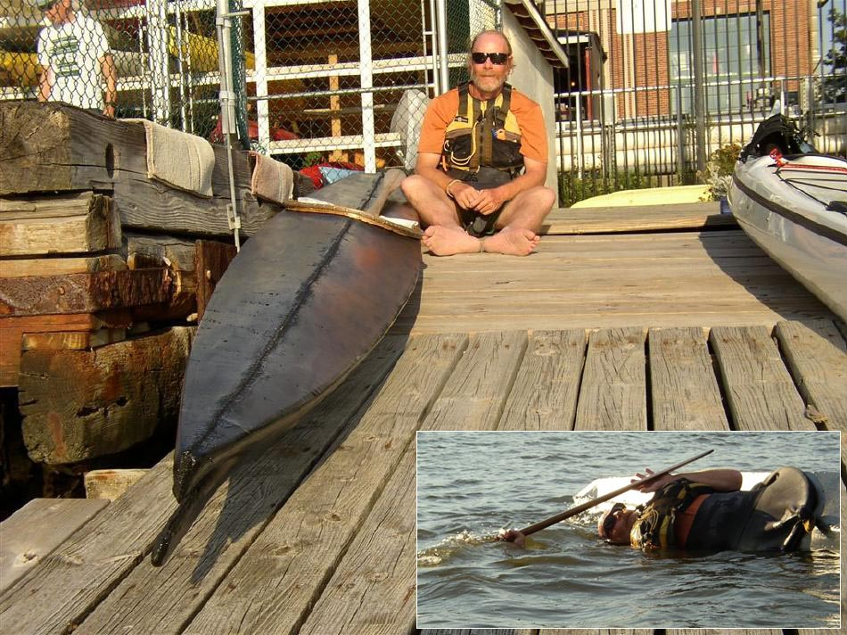

| Nikumi 19 "Iqyax" by Jack Gilman (US) | Menu Previous Page Next Page |
|

Jack with his non-folding wood frame Nikumi 19 Baidarka (18ft X 19in). His impressions of the boats performance are as follows..."The Nikumi 19 is a fine boat. I weigh 200lbs,have just enough freeboard for light water. It's a touch wet in bouncy stuff, but that's what I wanted. For my weight, it's plenty stable and carves nicely. It is very agile, but I found no problems tracking straight in following seas. As far as rolling, no problem. Speed is fine, surfed small wind waves nicely."
...For greater touring displacement the standard Nikumi ( 17.6' X 21") is an option....Jack earlier completed a Sea Ranger folder. Use the {Back} key to return. |
|